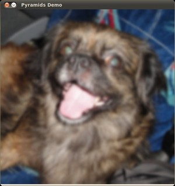

Image Pyramids
Goal
In this tutorial you will learn how to:
- Use the OpenCV functions cv::pyrUp and cv::pyrDown to downsample or upsample a given image.
Theory
The explanation below belongs to the book Learning OpenCV by Bradski and Kaehler.
- Usually we need to convert an image to a size different than its original. For this, there are two possible options:
- Upsize the image (zoom in) or
- Downsize it (zoom out).
- Although there is a geometric transformation function in OpenCV that -literally- resize an image (cv::resize, which we will show in a future tutorial), in this section we analyze first the use of Image Pyramids, which are widely applied in a huge range of vision applications.
Image Pyramid
- An image pyramid is a collection of images - all arising from a single original image - that are successively downsampled until some desired stopping point is reached.
- There are two common kinds of image pyramids:
- Gaussian pyramid: Used to downsample images
- Laplacian pyramid: Used to reconstruct an upsampled image from an image lower in the pyramid (with less resolution)
- In this tutorial we’ll use the Gaussian pyramid.
Gaussian Pyramid
Imagine the pyramid as a set of layers in which the higher the layer, the smaller the size.

Every layer is numbered from bottom to top, so layer \((i+1)\) (denoted as \(G_{i+1}\) is smaller than layer \(i\) (\(G_{i}\)).
To produce layer \((i+1)\) in the Gaussian pyramid, we do the following:
- Convolve \(G_{i}\) with a Gaussian kernel:
\[\begin{split}\frac{1}{16} \begin{bmatrix} 1 & 4 & 6 & 4 & 1 \\ 4 & 16 & 24 & 16 & 4 \\ 6 & 24 & 36 & 24 & 6 \\ 4 & 16 & 24 & 16 & 4 \\ 1 & 4 & 6 & 4 & 1 \end{bmatrix}\end{split}\]- Remove every even-numbered row and column.
You can easily notice that the resulting image will be exactly one-quarter the area of its predecessor. Iterating this process on the input image \(G_{0}\) (original image) produces the entire pyramid.
The procedure above was useful to downsample an image. What if we want to make it bigger?: columns filled with zeros (\(0\))
- First, upsize the image to twice the original in each dimension, wit the new even rows and
- Perform a convolution with the same kernel shown above (multiplied by 4) to approximate the values of the “missing pixels”
These two procedures (downsampling and upsampling as explained above) are implemented by the OpenCV functions cv::pyrUp and cv::pyrDown, as we will see in an example with the code below:
When we reduce the size of an image, we are actually losing information of the image.
Code
This tutorial code’s is shown lines below. You can also download it from here
#include "opencv2/imgproc.hpp" #include "opencv2/imgcodecs.hpp" #include "opencv2/highgui.hpp" using namespace cv; Mat src, dst, tmp; const char* window_name = "Pyramids Demo"; int main( void ) { printf( "\n Zoom In-Out demo \n " ); printf( "------------------ \n" ); printf( " * [u] -> Zoom in \n" ); printf( " * [d] -> Zoom out \n" ); printf( " * [ESC] -> Close program \n \n" ); src = imread( "../data/chicky_512.png" ); // Loads the test image if( src.empty() ) { printf(" No data! -- Exiting the program \n"); return -1; } tmp = src; dst = tmp; imshow( window_name, dst ); for(;;) { char c = (char)waitKey(0); if( c == 27 ) { break; } if( c == 'u' ) { pyrUp( tmp, dst, Size( tmp.cols*2, tmp.rows*2 ) ); printf( "** Zoom In: Image x 2 \n" ); } else if( c == 'd' ) { pyrDown( tmp, dst, Size( tmp.cols/2, tmp.rows/2 ) ); printf( "** Zoom Out: Image / 2 \n" ); } imshow( window_name, dst ); tmp = dst; } return 0; }
Explanation
Let’s check the general structure of the program:
Load an image (in this case it is defined in the program, the user does not have to enter it as an argument)
src = imread( "../data/chicky_512.png" ); // Loads the test image if( src.empty() ) { printf(" No data! -- Exiting the program \n"); return -1; }
Create a Mat object to store the result of the operations (dst) and one to save temporal results (tmp).
Mat src, dst, tmp; /* ... */ tmp = src; dst = tmp;
Create a window to display the result
imshow( window_name, dst );
Perform an infinite loop waiting for user input.
for(;;) { char c = (char)waitKey(0); if( c == 27 ) { break; } if( c == 'u' ) { pyrUp( tmp, dst, Size( tmp.cols*2, tmp.rows*2 ) ); printf( "** Zoom In: Image x 2 \n" ); } else if( c == 'd' ) { pyrDown( tmp, dst, Size( tmp.cols/2, tmp.rows/2 ) ); printf( "** Zoom Out: Image / 2 \n" ); } imshow( window_name, dst ); tmp = dst; }
Our program exits if the user presses ESC. Besides, it has two options:
Perform upsampling (after pressing ‘u’)
if( c == 'u' ) { pyrUp( tmp, dst, Size( tmp.cols*2, tmp.rows*2 ) ); printf( "** Zoom In: Image x 2 \n" ); }
We use the function cv::pyrUp with three arguments:
- tmp : The current image, it is initialized with the src original image.
- dst : The destination image (to be shown on screen, supposedly the double of the input image)
- *Size( tmp.cols*2, tmp.rows*2 )* : The destination size. Since we are upsampling, cv::pyrUp expects a size double than the input image (in this case tmp).
Perform downsampling (after pressing ‘d’)
else if( c == 'd' ) { pyrDown( tmp, dst, Size( tmp.cols/2, tmp.rows/2 ) ); printf( "** Zoom Out: Image / 2 \n" ); }
Similarly as with cv::pyrUp, we use the function cv::pyrDown with three arguments:
- tmp : The current image, it is initialized with the src original image.
- dst : The destination image (to be shown on screen, supposedly half the input image)
- Size( tmp.cols/2, tmp.rows/2 ) : The destination size. Since we are upsampling, cv::pyrDown expects half the size the input image (in this case tmp).
Notice that it is important that the input image can be divided by a factor of two (in both dimensions). Otherwise, an error will be shown.
Finally, we update the input image tmp with the current image displayed, so the subsequent operations are performed on it.
tmp = dst;
Results
After compiling the code above we can test it. The program calls an image chicky_512.jpg that comes in the samples/data folder. Notice that this image is \(512 \times 512\), hence a downsample won’t generate any error (\(512 = 2^{9}\)). The original image is shown below:

First we apply two successive cv::pyrDown operations by pressing ‘d’. Our output is:

Note that we should have lost some resolution due to the fact that we are diminishing the size of the image. This is evident after we apply cv::pyrUp twice (by pressing ‘u’). Our output is now:
